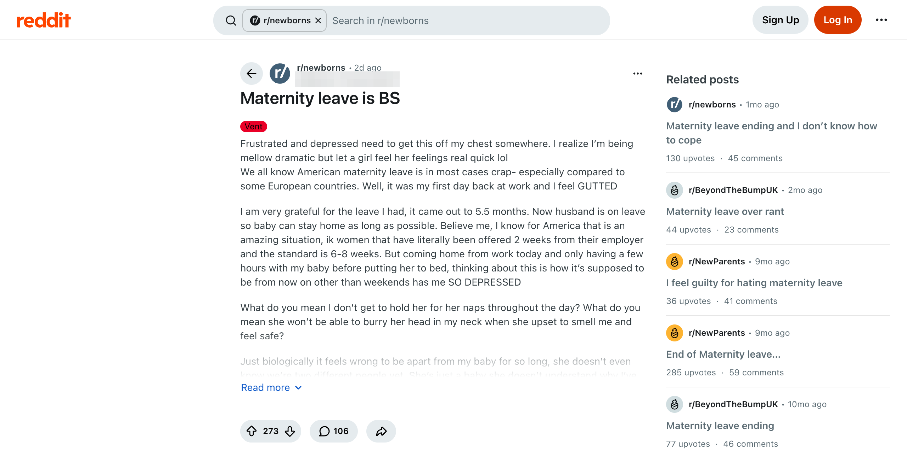

M9 Care / Alloparenting
Distributed care - the organism expects a village, not solo parenting.
Parental and alloparental care system. Oxytocin/prolactin circuits.
Not an opinion. Every claim here comes from Cor, 658 graded findings from 159 studies and books on what humans need.Cor: 658 graded findings, 159 studies.
What really is the first day back from maternity leave? whatreally.is/the-first-day-back-from-maternity-leave
Then For 300,000 years, parents had help.
The job is the cheapest way to keep the household fed, so she takes it, and the cost lands on the oldest bond she has: a nursing baby carried against her body all day.
The source

“Just biologically it feels wrong to be apart from my baby for so long, she doesn't even know we're two different people yet.”
“What do you mean I don't get to hold her for her naps throughout the day? What do you mean she won't be able to burry her head in my neck when she upset to smell me and feel safe?”
“I'm pumping but what about the mothers that exclusively nurse?”
“I realize I'm being mellow dramatic but let a girl feel her feelings real quick lol”
How strongtested many timestested onceseen in animalsargued, not yet testedcontested
A new mother's melodrama is a nursing baby at home all day while she pumps milk at work.
Cor says For most of human history a baby this young was carried and held for nearly all of the daylight hours.
Leave only sets the date; a job with no room for a baby makes a separation no gratitude fixes.
Cor says Humans are built to work in small groups among the people they live with, and infants rode on the body for much of the day.
A pump keeps the milk coming and leaves out the holding and smell a baby settles on.
Cor says For most of human history infants were nursed in short bouts several times an hour, carried in near-constant body contact.
Diagnosis: melodrama. Actual condition: a baby she still nurses, at home all day while she pumps milk at work. Humans are built to carry a baby that age and feed it whenever it fusses, and the leave fight is over how many weeks before a workday with no babies in it takes that away.
Source: Reddit, r/newborns, 5 Nov 2026
She got 5.5 months of leave, friends of hers got offered 2 weeks, and her husband is home with the baby now. She still lies in bed crying and stalls sleep so the morning comes later. A longer leave would only move that morning. Her job is the mismatch: wage work happens where no baby can come, so every workday means leaving her, and the job feeds the household, so she goes. Then she pumps, gets a few hours before bed, and everyone argues about how many weeks of leave are fair.
For most of human history a baby this young was carried and held for nearly all of the daylight hours, nursed often in short bouts, and answered fast when she cried, mostly by her mother. About half of children died before 15, and that contact helped keep them alive. Her care and bonding systems still run on that, so a baby who buries her head in her mother's neck to feel safe goes missing every weekday, and gratitude for the leave does nothing to quiet them. Her husband has the baby, and the gap she feels is her own holding, smell and nursing, which a pump only half replaces.
The separation also has no end and no lever. A forager mother's close contact eased by degrees as her baby grew; hers stops on an employer's date and repeats every weekday, set by people she never chose. And she carries it alone at night, typing to a forum, where a camp would have had a few dozen familiar people around to talk it over.
They say
“I realize I'm being mellow dramatic”
American maternity leave is BS next to Europe's, a whole first year would fix it, and her own crying is melodrama and depression, even though being apart feels biologically wrong.
We say
Her care and bonding systems are reading a nursing baby taken off her body most of every weekday, and they hit hard because that is their job.
What they get wrong. Leave length only decides the date the separation starts; a workplace with no babies in it makes it, and her own line about it feeling biologically wrong was the right one.
Every brain system that could explain this, oldest at the top. The longer the bar, the more of the source it explains. The longest bar is the top score.
Work outside the camp (the case 11 lens)
One carer at a time
Calling the signal drama
The leave benchmark is modern against modern
No Cor system
Why it wins. Mother away from a nursing infant explains 7 of the 12 details in the source, including the turning point, and sits on reproduction. It also has the top score.
Score = 0.571 x what is at stake (survival 1, reproduction 0.67, standing 0.33) + 0.286 x share of details explained + 0.143 x distance from the camp. Phylogenetic age adds no points; it orders the stack and settles near-ties.
Distributed care - the organism expects a village, not solo parenting.
Parental and alloparental care system. Oxytocin/prolactin circuits.
Forms bonds with other humans. Pain-grade distress when they're gone.
Attachment and co-regulation system. Includes grief mode. Two states: security (enables broadly) and grief (suppresses broadly).
Change the job around the baby: ask for remote days, a shorter week, or a carer who brings her in so you can nurse at lunch.
Put her back on your body whenever you're home: a carrier through the evening, weekend naps on you, her cot in your room at night.
Bring more familiar hands into the house before his leave ends: a grandmother, a friend, other new mothers you see in person.
Young infants were carried and held for nearly all of the daylight hours.
Infants were nursed in short bouts several times an hour, and their crying got a fast answer, usually from the mother.
About half of forager children died before 15.
Small babies kept skin to skin with their mothers die less often and grow better.
Others besides the mother held and fed infants, and help was usually needed to raise any child.
Work was done in small groups among the people you lived with, in a camp of a few dozen.
Close contact with the mother eased by degrees as the infant grew.
Bands had no rulers, and people could leave a camp for another.
Her leave lasted 5.5 months, friends were offered 2 weeks, her husband is on leave with the baby, and she pumps at work.
Humans are built with one old hormone system that runs mothering and eases the pain of separation.
Forager infants cried about as often as Dutch and American infants, only for less total time, and contact with the mother fell sharply in the second year. Others besides the mother held babies too.
Forager infants' passive contact with the mother fell from about 70% in the early months to about 30% in the second year. The holding figure comes from one Aka comparison.
Mothers still did most of the holding in one forager group (about 69%). Cooperative breeding and the grandmother effect are directly disputed, and fathers raised child survival in only a third of studies.
The baby is with a reliable father by day, so a care gap does not explain her distress. It rests on her own holding, smell and nursing, which limits the care-network reading and leaves the contact reading intact.
Skin-to-skin survival evidence comes from low-birthweight hospital infants in low-income settings; for healthy full-term infants it is from monkeys.
Constructed-emotion research finds no consistent physical fingerprint for a single emotion, and the separation-distress opioid link is contested.
A new mother may carry sleep loss and postpartum hormone shifts that colour her mood. The source gives no marker, and the onset on the day she returned to work points to the situation.
Forager mothers did their daily food work with an infant under six months carried on the body.
Hurtado et al. 1985 on Ache women's foraging time with nursing infants, or Konner's detailed !Kung carrying data
Grades are Cor's. Every id opens its Cor page.